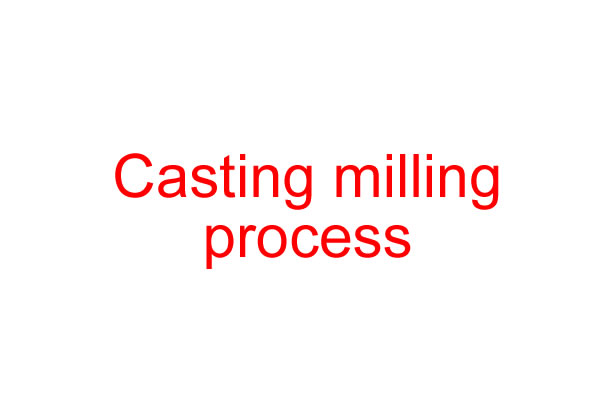
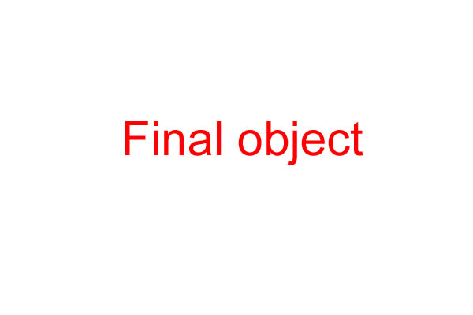

During this week we've learned about molding and casting techniques and various materials.
The assignment of this week module is to design a 3D object mold, to machine it, and then to cast parts from it. As I’m involved in the setup and launch of the Brindisi Fablab, I decided to mold and cast an object with the name and log of this fablab. Therefore, I opted for an object that can be used differently for example as coin container, sign plate, etc.
As I got experienced with 3D design, I decided to use Rhino to model my object. First I made some reflections about the face I want to use of the final cast, and some bit I got confused about the sense of the text (mirror effect on the mold), I finally designed the object as I wanted to be.
Before getting the 3D model, I took the following considerations:
The dimensions of the machinable wax block I had
I had to leave extra width (10mm) at the base of the wax block
I had to consider mold base width (12mm) while making the 3D model
Therefore, here is the mold design I produced:
And this the 3D model like this, which should be also the final result of wax block after milling:
Step 2: Milling the mold
Description of milling process
Step 3: Casting
Description of casting process


The 3D mold file available for downloand here: